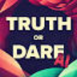
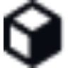

МолекулаАгрегаторы нейросетей
Молекула объединяет модели для текстов, изображений, видео и музыки. В одном аккаунте можно подобрать инструмент под этап работы, сохранить инструкции проекта и использовать готовые роли.
К задаче в МолекулеРаздел «Игры»: варианты ИИ для этой задачи, описания возможностей и переходы к обзорам. Сравните несколько решений на одинаковом примере.
Продумайте правила простой игры, прежде чем переходить к программированию. Укажите возраст игроков, цель и способ управления; получите описание механики, состояний и проверки победы, которое разработчик сможет использовать при создании и тестировании собственного рабочего прототипа.
Предложи механику учебной игры о сортировке отходов для школьников: выбор контейнера, подсказка при ошибке, итог раунда. Опиши состояния и правила победы, без обещания готового опубликованного приложения.
Молекула объединяет модели для текстов, изображений, видео и музыки. В одном аккаунте можно подобрать инструмент под этап работы, сохранить инструкции проекта и использовать готовые роли.
К задаче в Молекуле«2085.WORLD» представлен в разделе «Игры». При выборе проверьте нужную операцию и условия работы с результатом.
«CSM» представлен в разделе «Игры». При выборе проверьте нужную операцию и условия работы с результатом.
«Fable Simulation» представлен в разделе «Разработка». При выборе проверьте нужную операцию и условия работы с результатом.
«Herewe Studio» подготавливает трёхмерные объекты. «Herewe Studio» помогает подготовить игровой процесс.
Для «LocGuessr» сначала определите свою задачу и требуемый результат. Карточка относится к направлению «Игры».
Сравнивать «ProGuides» с другими инструментами раздела «Образование» удобнее на одинаковом исходном материале.
Сравнивать «AI Dungeon (aidungeon.com)» с другими инструментами раздела «Игры» удобнее на одинаковом исходном материале.
Для «Aimlabs» сначала определите свою задачу и требуемый результат. Карточка относится к направлению «Игры».
«ArcaneLand» представлен в разделе «Чат-боты и ассистенты». При выборе проверьте нужную операцию и условия работы с результатом.
«Doodlocracy» помогает подготовить игровой процесс.
Fable Fiesta помогает готовить кампании D&D, персонажей, монстров и детали вымышленного мира. На сайте также есть генераторы историй, диалогов и сюжетов для писательских задач.
Minecraft Skin Generator создаёт игровой скин из текстового задания на русском языке. Пользователь описывает образ и получает файл PNG для Minecraft. В интерфейсе предусмотрен объёмный предпросмотр, позволяющий рассмотреть внешность созданного персонажа перед дальнейшим использованием полученного изображения в игре.
Pairrd предлагает обучение покеру с ИИ-подсказками и тренировочными сценариями. В набор входят видеоуроки, разбор недостатков игровой стратегии и инструменты ChipEV и ICM. Платформа ориентирована на обсуждение решений в турнирах; учебный разбор не следует считать обещанием выигрыша или известного результата конкретной игры.
Для «Peridot AR Tamagotchi» сначала определите свою задачу и требуемый результат. Карточка относится к направлению «Игры».
Сравнивать «PlayThis» с другими инструментами раздела «Игры» удобнее на одинаковом исходном материале.
Для «Tavern of Azoth» сначала определите свою задачу и требуемый результат. Карточка относится к направлению «Создание контента».
Для «EasySBC» сначала определите свою задачу и требуемый результат. Карточка относится к направлению «Игры».
LitRPG Adventures предлагает библиотеку игровых материалов и генераторы для настольных ролевых сценариев. Пользователи могут создавать и обмениваться содержанием. Для собственной кампании задайте правила мира и роль нового элемента, затем проверьте совместимость с системой и уже установленными событиями; случайная подробность не должна противоречить истории персонажей.

«Truth or Dare AI» представлен в разделе «Игры». При выборе проверьте нужную операцию и условия работы с результатом.
Сравнивать «DnD Dice Roller» с другими инструментами раздела «Игры» удобнее на одинаковом исходном материале.
«Play2Learn» представлен в разделе «Образование». При выборе проверьте нужную операцию и условия работы с результатом.
Сравнивать «Rolp AI» с другими инструментами раздела «Чат-боты и ассистенты» удобнее на одинаковом исходном материале.

«Texture Lab» подготавливает трёхмерные объекты. «Texture Lab» подготавливает текстуры для визуальных объектов.
«Altera PlayLabs» помогает подготовить игровой процесс.

Ludo.ai используют, чтобы получать изображения из словесного задания. Ещё одно направление работы: готовить музыкальную композицию по заданию.
Для «SIMA, Google’s AI That Plays Video Games Like a Human» сначала определите свою задачу и требуемый результат. Карточка относится к направлению «Игры».
AI Pokemon generator помогает создавать вымышленных существ в стилистике покемонов. Предусмотрены несколько вариантов за один запрос и настройка типа, цвета и условного поколения. Для игрового концепта сравните формы и отличительные детали персонажей; отдельно уточните условия использования изображений и не представляйте результат как официального героя франшизы.
GGPredict помогает игрокам CS:GO разбирать матчи и строить индивидуальную тренировку. Инструмент предлагает персональные программы и специальные карты для занятий. Статистика и отслеживание прогресса дополняют практику, чтобы пользователь мог рассматривать собственную игру и продолжать работу над выбранными навыками.
«Language Learning Games» помогает подготовить игровой процесс. «Language Learning Games» также помогает изучать выбранный язык.
LlamaGen AI помогает создавать аниме, комиксы и материалы для игр с использованием генеративного ИИ. Отдельное направление включает работа с комиксами и согласованность персонажей между изображениями. Инструмент объединяет визуальную часть повествования с разработкой истории, когда рисунки должны относиться к одним героям.
В инструменте «Meshy AI» можно готовить трёхмерный объект для проекта. Ещё одно направление работы: получать изображения из словесного задания.
Nunu создаёт ИИ-агентов для игровых проектов и помогает разработчикам проверять качество игры. Агенты используют визуальную информацию, а результат сопровождается отчётностью. Такая работа позволяет рассматривать действия агента и его решения в контексте проверки игрового процесса при разработке.
«AI Game Master» помогает подготовить игровой процесс.
«BoostBot Mobile Game Bots» представлен в разделе «Игры». При выборе проверьте нужную операцию и условия работы с результатом.
Сравнивать «Roleplex» с другими инструментами раздела «Чат-боты и ассистенты» удобнее на одинаковом исходном материале.
«RPGGO AI» помогает развивать текст истории.
«Talefy» представлен в разделе «Игры». При выборе проверьте нужную операцию и условия работы с результатом.
Для «BotLab» сначала определите свою задачу и требуемый результат. Карточка относится к направлению «Разработка».
«ChessGPT» представлен в разделе «Развлечения». При выборе проверьте нужную операцию и условия работы с результатом.
Сравнивать «Skybox Lab» с другими инструментами раздела «Игры» удобнее на одинаковом исходном материале.
Для «AI Roguelite» сначала определите свою задачу и требуемый результат. Карточка относится к направлению «Игры».
Сравнивать «Convai» с другими инструментами раздела «Чат-боты и ассистенты» удобнее на одинаковом исходном материале.
Для «Friends Fables» сначала определите свою задачу и требуемый результат. Карточка относится к направлению «Игры».
«GPT Games» представлен в разделе «Игры». При выборе проверьте нужную операцию и условия работы с результатом.
Для «Haddock» сначала определите свою задачу и требуемый результат. Карточка относится к направлению «Разработка».
Pixela AI создаёт игровые текстуры с использованием диффузионных алгоритмов. Пользователь может загружать собственные изображения для подготовки новых вариантов. Обмен текстурами с сообществом дополняет генерацию, связывая исходный визуальный материал и его дальнейшее использование при работе автора над графическими ресурсами игры.
«PixelVibe» помогает подготовить игровой процесс.
Страница 1 из 2